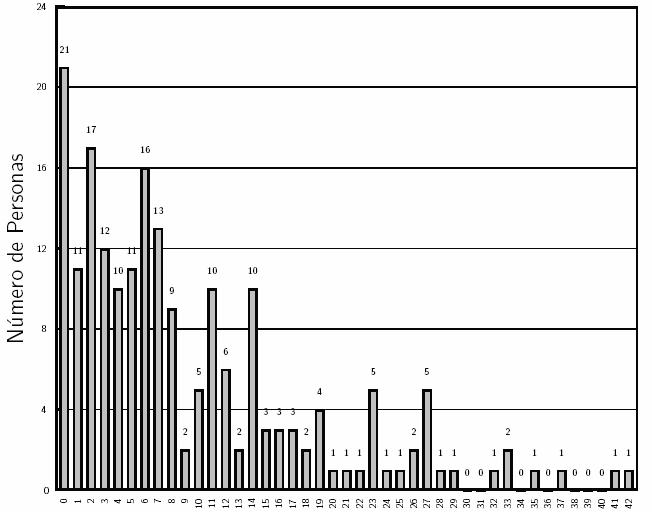
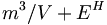

De: La Frikipedia, la enciclopedia extremadamente seria.
De: La Frikipedia, la enciclopedia extremadamente seria. De: La Frikipedia, la enciclopedia extremadamente seria.
Olimpiada Mexicana de Matatenas(Omm) es un concurso anual que se lleva a cabo en diferentes lugares del país. La más reciente fue en Zacatecas, Zacatecas en noviembre del 2006 y fue la XX edición del concurso. Cada año, los 36 estados de la república mexicana envían a 6 representantes que dominan el arte de las difetrentes áreas en las matatenas: Geomatatenas, combitatenas, y teoría de las matatenas... además de problemas raros de las matatenas y álgebra mataténica.
En cada estado participan miles en la primera etapa (los participantes tienen que ser menores de 20 años, estar a lo más en cuarto semestre de preparatoria y no pesar más de 345.5 kilogramos, ni menos de -33 kilogramos).
La OMM tiene dos propósitos básicamente: Identificar a los alumnos prominentes con aptitudes desarrolladas en el juego de la matatena, y promover el juego de la matatena a nivel básico, medio y superior en la república mexicana.
Cada año se otorgan 16 primeros lugares nacionales, que a su vez serán entrenados por la sociedad mexicana de matatena para representar al país en los siguientes concursos:
IMO: International Matatena Olympiad OIM: Olimpiada Iberoamericana de Matatena.
Los 5 alumnos más jóvenes y destacados en el concurso nacional son preseleccionados, entrenados y luego seleccionados par participar en la OMCC: Olimpiada Mataténica de Centroamérica y del Caribe.
En la XX edición del concurso los 16 primeros lugares fueron:
La puntuación por estados fue (Sólo se mencionan a los estados que obtuvieron puntuaciones destacadas):
Lugar, Estado, Puntos:
A continuación ponemos un estracto de Regla y Compás, el periódico oficial de la federación mataténica mexicana.
"Querido Doctor Corazón Gato: Al fin encontré a al persona que puede curar este dolor dentro de mí, olvidado por aquel editor de boletines de olimpiada,Hoy que lo vi empuñar su espada y pronunciar esas pálabras mágicas: "por el Poder de Greyskull" me enamoré al instante, y cuando lo vi bailar polka supe que sería la persona con quien pasaría el resto de mi vida..."
Etc. 
 Esta fórmula determina la puntuación, donde m=número de piedritas que agarras, V=coeficientew de asimetría de parentesco con Valente (el mejor matatenista de la historia del universo), E es el número de edición de la olimpiada y H=humor en el que se encuentra Valente.
Los ganadores de la OMM reciven año con año un juego de Matatena con un valor inclaculable y la oportunidad de entrenar con los mejorespara poder ser parte de la delgación que representa a México en la IMO. En este certamen los premios consisten en una matatena de DIAMANTES.
Desgraciadamente hasta el momento un solo participante mexicano ha obtenido la preciada matatena de la IMO, y él es Valente. Este participante es considerado el mejor del mundo y ha vencido a cada oponente al cual se ha enfrentado (incluyendo a Jan Contreras -alias: JAMOM- quien a pesar de ser prometedor perdió la muñeca derecha en su enfrentamiento con Valente y hoy día se ha retirado) es por esa razón que se le considera el Juez Supremo dentro de la OMM.
Autor(es):